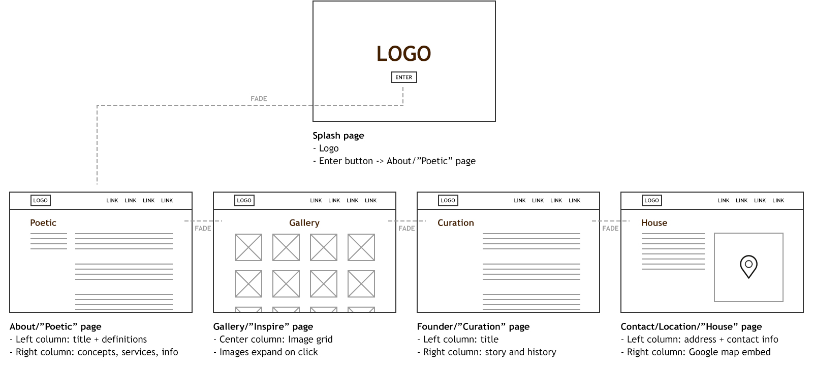
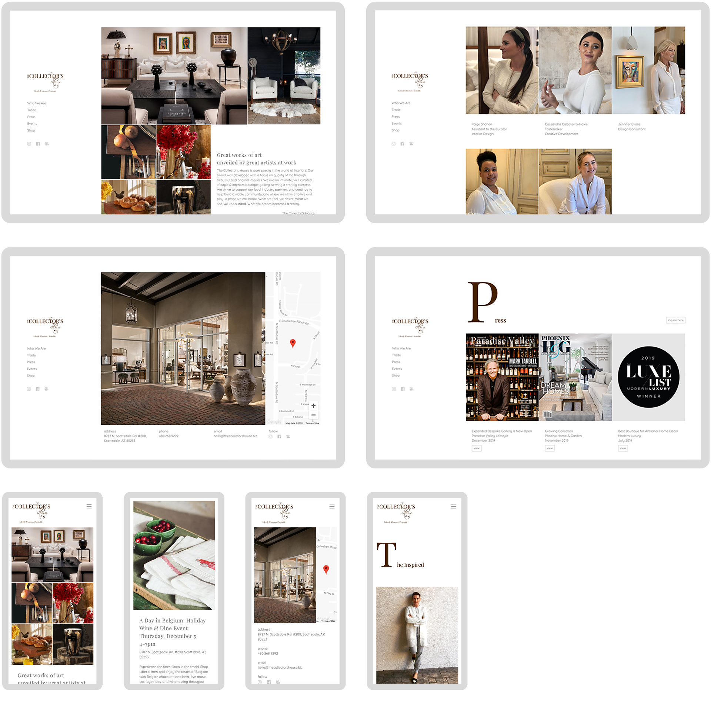
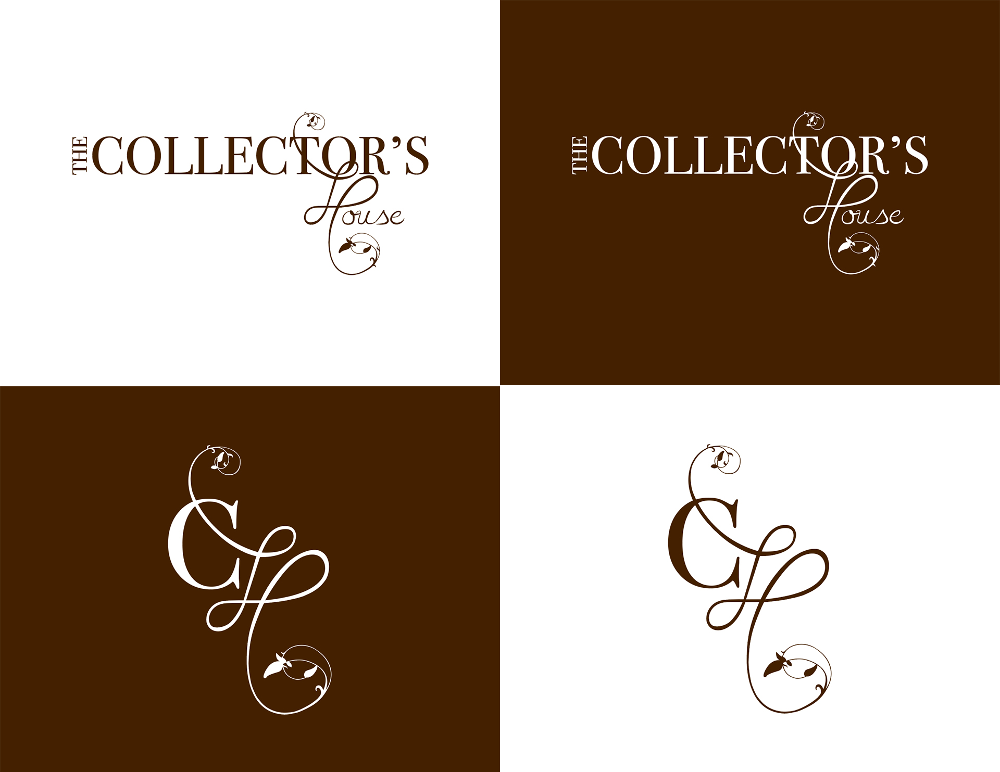
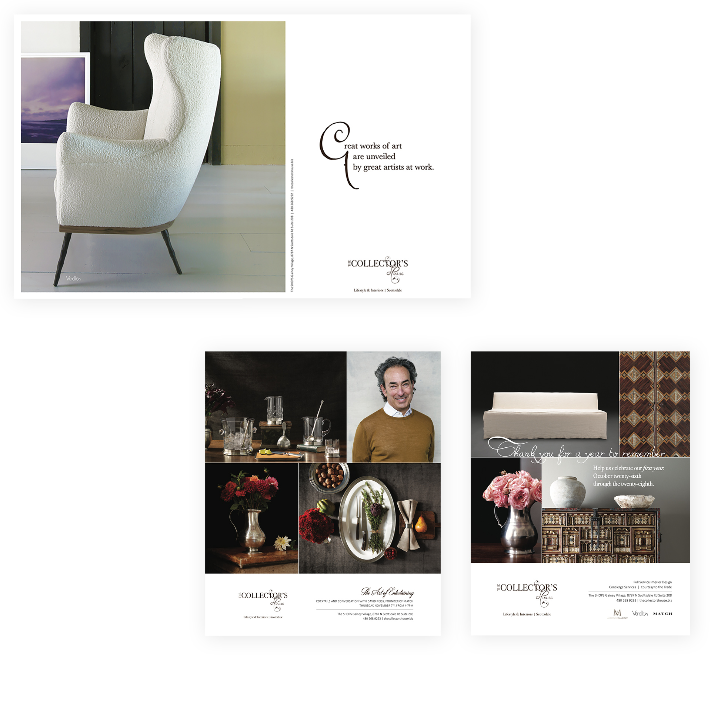
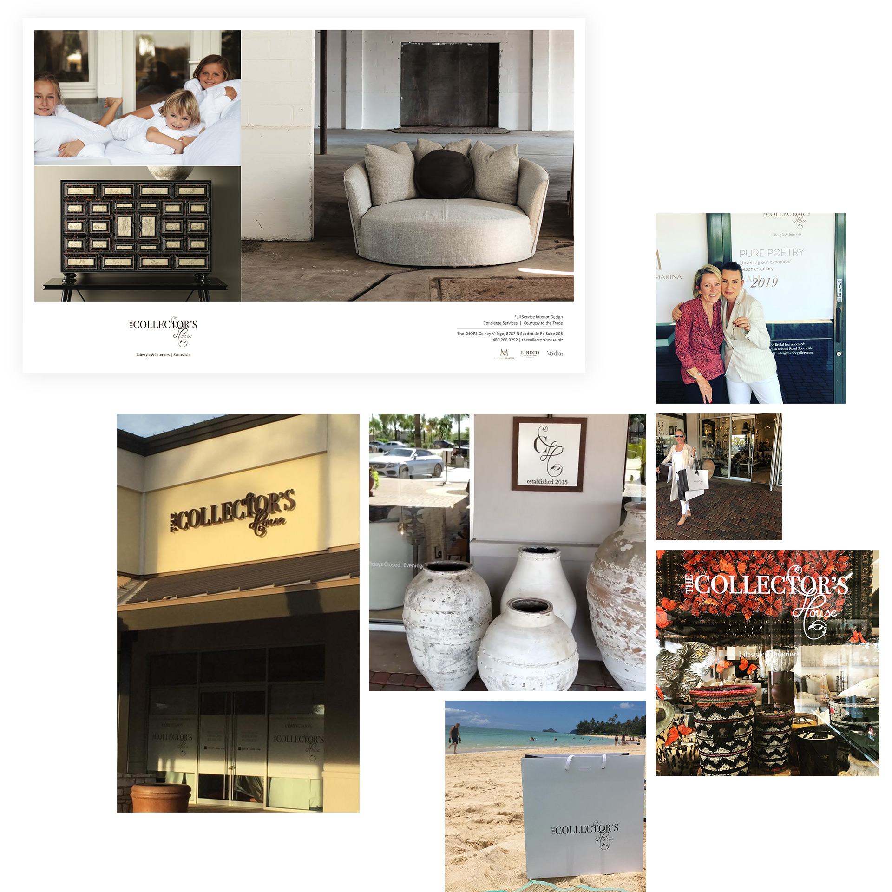

Background
I was hired by The Collector's House, a new luxury and design boutique opening in Scottsdale, to reimagine their brand, create full page ads, and design/develop a front-facing site. The high-level business goal was to create a fresh, relatable brand to draw in luxury-focused clientelle and carve a growing space in the residential design market.
Opportunity
The Collector's House is a unique project, having the opportunity to be on the ground floor of design and creative for a niche, but expanding home luxury design market. Scottsdale is a great location for this because of its plethora of luxurious homes and residents with unique taste. My client was very driven to expand their presence quickly and become a well-known design entity in an already crowded space.
Hypothesis
I believe growing brand recognition and customer engagement will be achieved by designing a clean, simple, and revealing brand and web presence.
Timeline
October 2015 - Present
Website Design and Development
{kind=link}
Kick-Off
Ideas to Themes
My client had a very particular vision for their business' website. Growing up in the interior design industry, they were accustomed to traditional means of brand outreach and communication, like magazine covers and paper advertising, while stressing analog practices. Some general ideas and themes she gave to me to work with:
1.) Magazine or flipbook look and feel
2.) "Pencil-on-paper", elegant writing
3.) White space and open
4.) Celebrate the artist and their craft
5.) Showcase deliberate and beautiful photography
Form Hypothesis
After more meetings and compiling notes, I put together a clear hypothesis statement:
I believe growing brand recognition and customer engagement will be achieved by designing a clean, simple, and revealing brand and web presence.
Empathize
Understand the User
With a general direction and theme decided on, I wanted a better understanding of the audience. Information from my client along with gathered research and census data of the Scottsdale/east Phoenix valley area helped me iron out a key user persona.
Demographic
- Majority are older (54+ years old)
- Longer-term North Scottsdale resident
- High income
Needs
- Interior design consultation
- Rare or one-off home furniture and decor
Behaviors
- High spenders
- Local and community influenced
- Collects art and/or enthusiasts
- Seek small, luxury-focused plazas
{kind=link}
{kind=link}
Ideation
Direction
I revisited the initial ideas and themes and we started focusing on the "magazine/flipbook" direction for the website. The concept was to mimic the experience of flipping through a luxury magazine or art gallery flipbook.
Supporting Ideas
- Have pages animate on select; avoid static loading
- Draw visitor's attention through the center of the page
- Photography up front, supporting text backgrounded
- Decorative titles coupled with a clean, universal sans-serif
- Multiple columns vs. singular
I used these ideas to start sketching wireframes.

Early wireframes of site layout and interaction sets.
Develop
Approach
With a design settled on, I used framework Bootstrap 3 as a boilerplate to start developing the site. Some key areas I wanted to focus on:
- Top-level navigation: Always exposed and accessible
- Animation: Show animation on each page transition
- Minimal: Keep each page simple and avoid excessive scrolling
Build Elements
I then broke views down into clusters of elements:
- Navigation bar
- Text blocks
- Image blocks
- Google Map embed and location API
- Form fields and buttons
- Lightbox modal
Coming to Life
I approached each page as groups of elements, making everything visually consistent and easy to understand from a coding standpoint. Once each page was where we wanted it, I hooked up the animation through Javascript and the site came to life
{kind=link}

Version 1 of the site.
{kind=link}
Launch, Test, Iterate
Version 1 Launch
After much testing and tweaking with my client and their customers in real-time, we launched the initial version of the site in December of 2015. The engagement at first was slow, but began to see an increase in visitors and clicks thanks to our local advertising, high season for the industry, and word-of-mouth marketing and events.
Feedback
The site was monitored and lightly iterated on for two years before my client reached out about a needed update. Feedback accumulated from customers and staff after using and exploring the site:
- The page animation is slow and breaks occasionally
- Some customers found it cumbersome to navigate on mobile
- Bounce rates occured from the "Contact us" form taking too long to submit
- Hours of operation and holidays were difficult to locate
Version 2 Thinking
This feedback fueled my desire to greatly improve the site's UX and functionality. I boiled it down to these key aspects needed for success:
- Familiar: Depart from the page animations and stick with conventional page loading and navigation patterns
- Clear: Use simpler, more direct naming conventions for page names and CTA's
- Mobile-first: Since most of these customers are visiting from a mobile device, focus on enhancing their experience as much as possible
The Designs
Within the first 6 months of launching Version 2 of the site, The Collector's House received a huge boost in visitors and retention rates increased.
View Site

Brand and Print Design
{kind=link}
Inspiration
Initial Direction
My client had a strong vision for their brand from the get-go: strive for "natural", "classic" and authentic/one-of-a-kind, much like the pieces they sell.
Examples and Insight
We went through many local design magazines and took in surrounding areas. Publications like Phoenix Home & Garden, Luxe Magazine, and Modern Luxury gave us great insight as to how other luxury brands promoted their vision and supply through advertising. Walking around various stores, exploring tradeshows, vendors, and warehouses and seeing the type of work being sold and created also helped us greatly.
Define Design Language
Theme
From what we took in, I started piecing together the brand's theme, used to convey its meaning, feeling, and purpose:
- Natural, hand-crafted, and raw
- Light, air-y, and clean
- Organized, tidy, and purposeful
Building Blocks
Using themes to drive design language decisions, I broke it down into building blocks:
- Color palette: Chocolate, wicker, and white
- Shapes: Square and hard edges
- Typography: Traditional serif for titles, simple sans-serif for body
- Metaphors: Natural, organized, and refined
{kind=link}
{kind=link}
Define Logo and Mark
Ideas
With general branding direction established, we started on the logo and mark. My client wanted "The Collector's House" type in serif with some of the "natural" metaphors. Ideas began to emerge:
- Tie the identity with artist's works; hand-made, rough, and wooden
- Duality of rigid, structure met with natural, soft
- "Classically modern"
Sketches
I started drawing elements and objects that represented these ideas. My client and I closely collaborated in this phase and came up with some solid options revolving around the "CH", duality and natural ideas.
Digitize and Refine
With a couple of strong candidates defined on paper and I translated them into Adobe Illustrator for refinement. After a few iterations of using different typefaces and elements, I designed the final logo and mark variations.

Final logo and mark variations.
The Designs
We then brought all the inspiration, themes, and design language elements to life through print design. From outdoor signage to full page ads, we let the brand grow and shape into something unique and special for my client's audience.

